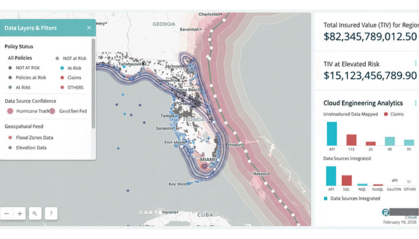
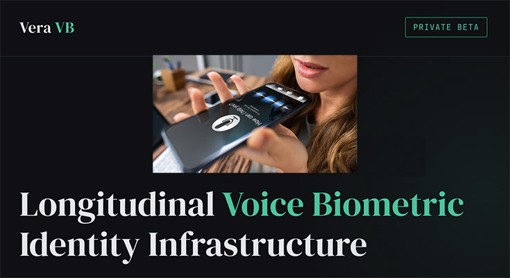

Selected Work
Projects & Case Studies.
GCP-native systems built for real operations — asset management, insurance intelligence, property data, and voice identity infrastructure.

IDist ®
Asset Management Infrastructure — Global Design & Procurement Platform
4 Countries
Unified Platform
30% Reduction
Procurement Cycle
Enterprise
Scale

View Case Study →
LH-PVI
Private Insurance — Mapping Unstructured Data to Geospatial Intelligence
70% Faster
Processing
Unstructured
→ Structured
Production
ML

NYCID
Private Property Dossier for NYC Residential
8.1M
Properties
Multi-Source
Fusion
Verified
Records

View Case Study →
Vera VB
Voice Biometric Identity Infrastructure
5 Layers
Proof Stack
$0 Audio
Stored on Platform
Private
Beta